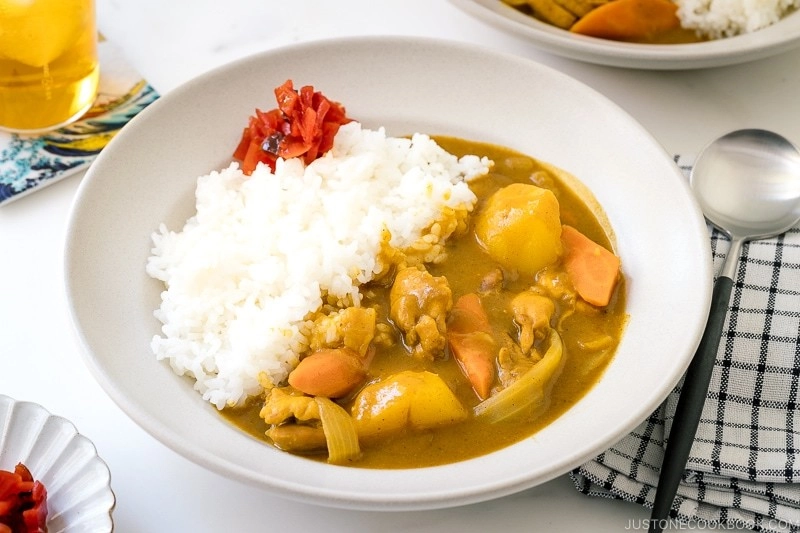

Japanese Chicken Curry

What is Japanese Curry?
Curry originates from the indian subcontinent,however over the course of time has made its way all around the world, with countless variations of the dish.
Curry was introduced to the United Kingdom in the 17th century,and made it to japan by way of the british in the 1800s when the indian subcontinent was still under british colonial control.
As with almost all the variations of this dish, japan refined the curry for japanese tastes.
What makes kare rice stand out and uniqally japanese, well there are a number of key differences. To start japanese curry is typically milder and less spicy than those around world, making enjoyable for people of all ages.
The sauce has a much thicker consistency, is sweeter and a perfect meal for a cold winter day.
- 6 boneless skinless chicken thighs
- 2 tablelspoons vegetable oil(or other netural flavored oil)
- 2 carrots
- 2 onions
- 3 cloves garlic
- Freshly ground black pepper
- ¼ tbsp salt
- 1 tbsp grated ginger
- ½ apple
- 2 large potatoes
- Short grain rice
For the sauce
- 960ml chicken stock
- 1 tbsp honey
- 1 Tbsp soy sauce
- 1 tbsp ketchup
- 1 pack japanese curry roux
- 3 tsp salt
Instructions
- Cut the onions in half, then either thinly slice or cut into wedges depending on your preference.
- Peel and cut the carrotts and potatoes, cutting the potatoes into quarters. To remove excess starch from the potates leave them to soak for roughly 15 minutes.
- Grate the ginger, and mince the garlic
- Peel and cut the apple into quaters,removing the core. Then grate the apple.
- Remove excess fat and cut the chicken into small pieces. Then season with salt and pepper
- In a large pot, heat the oil over medium heat and add the onion.
- Saute the onions, occasionally stirring, until they become tender and golden. 6 - 7 minutes.
- Add the garlic and ginger and mix together.
- Add the chicken and cook until no longer pink.
- Add the chicken stock and stir
- Next Add in the grated apple, honey, soy sauce, and ketchup.
- Put in the potatoes and carrots, and simmer for 15 minutes on a medium-low heat. Occasionally stir. (If the ingredients are fully covered by the broth simmer uncovered.)
- Cook until potatoes and carrots are softening.(Enough for a wooden skewer to go through.)
- Take off the heat. In a ladleful of cooking broth, put one or two cubes of roux and slowly dissolve it using a spoon, then stir into the pot. Repeat with the rest of the roux cubes for 8 servings.
- Simmer , on medium-low heat, stirring frequently, until the curry becomes thick. Roughly 5-10 minutes. Make sure nothing is stuck to the bottom of the pot to avoid burning.
- Serve the curry with shortgrain rice on the side.
- Store leftovers in the fridge in a airtight container for up to 3 days, and in the freezer for up to a month. When reheating add some water to dilute the sauce, as it will thicken.